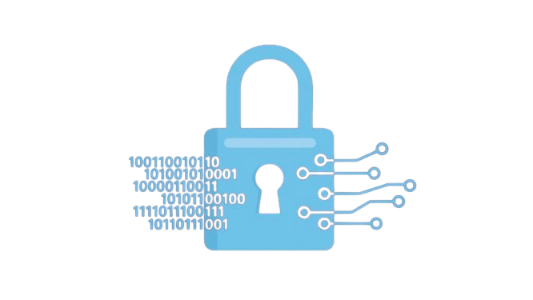

Cryptography

Ciphers
Encryption Standards
Contact
Ciphers
Encryption Standards
Contact

What is Cryptography?
Cryptography is the way of keeping information secure by transforming it into form that unwanted recipients cannot understand. In cryptography, an original human readable message, referred to as plaintext, is changed by means of an algorithm, or series of mathematical operations, into something that to an uninformed observer would look like gibberish; this gibberish is called ciphertext.
History of Cryptography
The first known evidence of cryptography can be traced to the use of 'hieroglyph'. Some 4000 years ago, the Egyptians used to communicate by messages written in hieroglyph. This code was the secret known only to the scribes who used to transmit messages on behalf of the kings.
Later, the scholars moved on to using simple mono-alphabetic substitution ciphers during 500 to 600 BC. This involved replacing alphabets of message with other alphabets with some secret rule. This rule became a key to retrieve the message back from the garbled message. The earlier Roman method of cryptography, popularly known as the Caesar Shift Cipher (also known as the Caesar cipher), relies on shifting the letters of a message by an agreed number (three was a common choice), the recipient of this message would then shift the letters back by the same number and obtain the original message.
Importance and Uses of Cryptography
Cryptography is an information security tactic used to protect enterprise information and communication from cyber threats through the use of codes. It is important and useful in various ways. Such as:
• Cryptography protects the confidentiality of information
Confidentiality is a key priority when it comes to cryptography. It means that only people with the right permission can access the information transmitted and that this information is protected from unauthorised access at all stages of its lifecycle. Confidentiality is necessary for maintaining the privacy of everyone. Encryption, therefore, is the only way to ensure that your information remains secure while it’s stored and being transmitted.
Example of Confidential Data: Bank details, government documents
• It assures that the sender or receiver is the right one
Cryptography also helps you make sure that the identity of both the sender and receiver and the origin or destination of the information is correct. Authentication is only possible via a special key exchange that’s used by the sender to prove his/her identity. This usually involves a username and a password, but it can also include other methods like a smart card, retina scan, voice recognition, or fingerprint scan.
Examples of Authentication: A common example is entering a username and password when you log in to a website. Entering the correct login information lets the website know who you are and that it is actually you accessing the website. Like our school website
• Cryptography also ensures the availability of data
Cryptography also supports the availability of data by guaranteeing that individuals with the right permission can use systems and retrieve data in a dependable and timely manner. This ensures that information systems are reliable and accessible.
• It assures that the sender or receiver is the right one
Cryptography also helps you make sure that the identity of both the sender and receiver and the origin or destination of the information is correct. Authentication is only possible via a special key exchange that’s used by the sender to prove his/her identity. This usually involves a username and a password, but it can also include other methods like a smart card, retina scan, voice recognition, or fingerprint scan.
Examples of Authentication: A common example is entering a username and password when you log in to a website. Entering the correct login information lets the website know who you are and that it is actually you accessing the website. Like our school website
Keep these facts is our mind… Cryptography makes our data, privacy, and everything way more secure in the world outside, you surely won’t like someone else talking to your friends pretending it’s you.
Future of Cryptography
Encryption is one of the most important parts of our lives right now and will always be one. Now as we see that technology is constantly moving upwards and everything is being done digitally, the importance and the usage of cryptography will also go upwards because we want our data and privacy to be secure. We don’t want someone to buy a house from our credit card, we also don’t want someone to get us into some trouble for something we didn’t do. Cryptography is one of the key aspects of our daily lives and it will always be one. The world of computers and cybersecurity is an ever-changing environment, with new tools like machine learning and AI being created every day. One idea, which has slowly become much more than just an idea, is the idea of quantum computing. With quantum computing, new encryption algorithms can be created which are many times more powerful than the classical cryptography we use today. Cryptography will evolve more and more in the future, and it will get better and better.